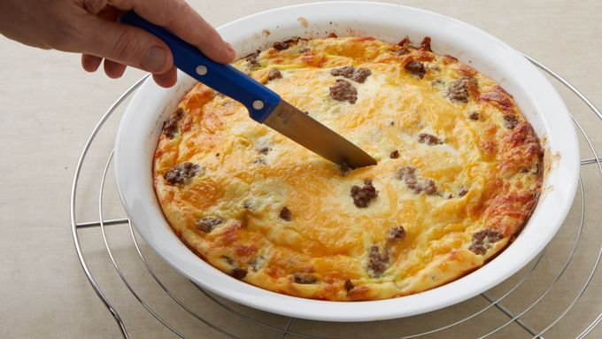

Cheeseburger Pie

This quick and easy recipe is sure to please even the pickiest eaters!
Ingredients
- 1 pound lean groud beef
- 1 large onion, chopped
- 1/2 teaspoon salt
- 1 cup shredded Cheddar cheese
- 1/2 cup pancake mix
- 1 cup milk
- 2 eggs
Steps
- Heat oven to 400°F. Spray 9-inch glass pie plate with cooking spray.
- In 10-inch skillet, cook beef and onion over medium heat 8 to 10 minutes, stirring occasionally, until beef is brown; drain. Stir in salt. Spread in pie plate. Sprinkle with cheese.
- In small bowl, stir remaining ingredients with fork or wire whisk until blended. Pour into pie plate.
- Bake about 25 minutes or until knife inserted in center comes out clean.